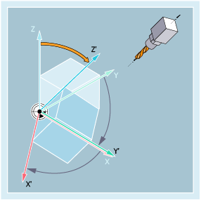

Mit den Befehlen der G-Gruppe 53 kann das Werkstückkoordinatensystem (WKS) so gedreht werden, dass dessen Orientierung mit der Ausrichtung des Werkzeugs oder Werkstücks übereinstimmt.
| TOFRAME/TOFRAMEZ/TOFRAMEY/TOFRAMEX |
| ... |
| TOROTOF |
| TOROT/TOROTZ/TOROTY/TOROTX |
| ... |
| TOROTOF |
| PAROT |
| ... |
| PAROTOF |
| Z-Achse des WKS durch Frame-Drehung parallel zur Werkzeugorientierung ausrichten Alle Komponenten eines vorher programmierten Frames werden gelöscht. | |
Alleine im Satz: | Ja | |
| wie TOFRAME | |
Alleine im Satz: | Ja | |
| Y-Achse des WKS durch Frame-Drehung parallel zur Werkzeugorientierung ausrichten | |
Alleine im Satz: | Ja | |
| X-Achse des WKS durch Frame-Drehung parallel zur Werkzeugorientierung ausrichten | |
Alleine im Satz: | Ja | |
| Z-Achse des WKS durch Frame-Drehung parallel zur Werkzeugorientierung ausrichten Die durch TOROT definierte Drehung ist die gleiche wie bei TOFRAME. Im Unterschied zu TOFRAME wird mit TOROT aber nur der Rotationsanteil im vorher programmierten Frame überschrieben, alle übrigen Frame-Komponenten (Nullpunktverschiebungen, Spiegelungen und/oder Skalierungen) bleiben unverändert. | |
Alleine im Satz: | Ja | |
| wie TOROT | |
Alleine im Satz: | Ja | |
| Y-Achse des WKS durch Frame-Drehung parallel zur Werkzeugorientierung ausrichten | |
Alleine im Satz: | Ja | |
| X-Achse des WKS durch Frame-Drehung parallel zur Werkzeugorientierung ausrichten | |
Alleine im Satz: | Ja | |
| Ausrichtung parallel zur Werkzeugorientierung ausschalten | |
Alleine im Satz: | Ja | |
| WKS durch Frame-Drehung am Werkstück ausrichten | |
Alleine im Satz: | Ja | |
| Die mit PAROT aktivierte werkstückbezogene Frame-Drehung wird mit PAROTOF ausgeschaltet. | |
Alleine im Satz: | Ja | |
| Programmcode | Kommentar |
|---|---|
| N100 G0 G53 X100 Z100 D0 | |
| N120 TOFRAME | |
| N140 G91 Z20 | ; TOFRAME wird eingerechnet, alle programmierten Geometrieachsbewegungen beziehen sich auf das neue Koordinatensystem. |
| N160 X50 | |
| ... |
Siehe auch:
Frame-Drehung zum Ausrichten am Werkzeug oder Werkstück (TOFRAME, TOROT, PAROT): Weitere Informationen
Programmierbare Frames (Übersicht)